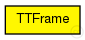
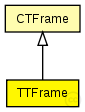

This documentation is released under the Creative Commons license
This documentation is released under the Creative Commons licenseRepresents a TT frame
See also: CTFrame
Author: Till Steinbach
The following diagram shows usage relationships between types. Unresolved types are missing from the diagram. Click here to see the full picture.
The following diagram shows inheritance relationships for this type. Unresolved types are missing from the diagram. Click here to see the full picture.
| Name | Type | Description |
|---|---|---|
| CTFrame | packet |
Represents a critical traffic frame |
| Name | Type | Description |
|---|---|---|
| displayString | string | |
| ctID | unsigned short | |
| ctMarker | unsigned int | |
| dest | MACAddress | |
| src | MACAddress | |
| frameByteLength | int |
frame length without physical layer overhead (preamble, SFD, carrier extension); used by MAC layer |
// // Represents a TT frame // // @see CTFrame // // @author Till Steinbach packet TTFrame extends CTFrame { string displayString = "b=15,15,rect,black,red,5"; }
This documentation is released under the Creative Commons license